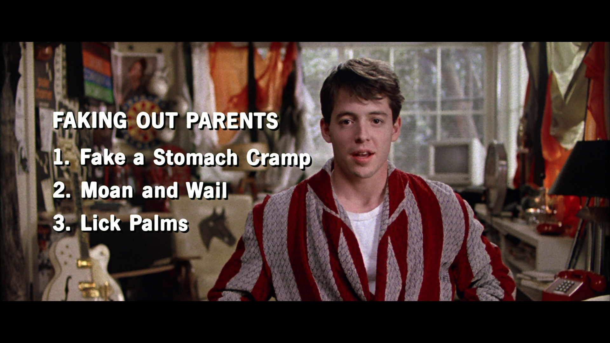

Plan
Alot of people
ditch and feel great for about an
hour. Then they realize there's
nothing to do. TV and food. I myself
have ditched and gotten so bored I
did homework.
You have to plan things out before
you take the day off. Otherwise
you get all nervous worrying about
what to do and all you get is grief
and the whole point is to take it
easy, cut loose and enjoy.
Explantion
Parents always fall for the clammy hands.
It's physical evidence of illness. It's
a good, non-specific symptom. Parents are
generally pretty hip to the fever scams.
And to make them work you have to go a hundred
and one, hundred and two. You get a nervous
mother and you end up in a doctor's office
and that's worse than school.
Fake a stomach cramp and when you're
doubled over, moaning and wailing, just
lick your palms. It's a little stupid
and childish but then so is high school.
Right?